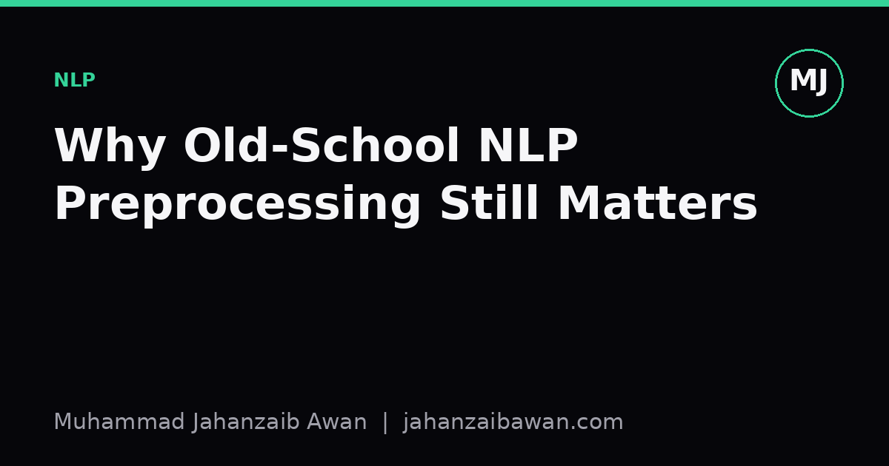

Why Old-School NLP Preprocessing Still Matters
Transformers learn a lot from raw text, but tokenisation, normalisation, and cleaning decisions from the bag-of-words era quietly shape results you get today.

The myth of the raw text pipeline
There is a comfortable story people tell about modern NLP: feed raw text into a transformer, let subword tokenisation and self-attention sort everything out, and preprocessing becomes someone else's problem from 2012. I think this story is mostly wrong, or at least dangerously incomplete. The decisions that used to live in a bespoke preprocessing script, lowercasing, punctuation stripping, stopword removal, stemming versus lemmatisation, handling of numbers and rare tokens, have not disappeared. They have moved earlier in the pipeline, into tokenizer training and data cleaning, and they have become less visible precisely because fewer people inspect them.
Consider a simple sentiment classification task built on a modern pretrained encoder, fine-tuned on a few thousand labelled reviews. If your training data has already been lowercased and had punctuation stripped before tokenisation, but your inference pipeline forgets to apply the same transformation, you have introduced a subtle train-test mismatch. The subword tokenizer will split words differently depending on case and punctuation context, so the exact same sentence can produce different token sequences depending on whether it passed through your old cleaning function. The model has not become case-insensitive by magic; it has simply learned whatever distribution of casing appeared in training, and it will be fragile outside that distribution.
A worked example: stopwords and short documents
Take a concrete case. Suppose you are building a classifier to detect whether short customer messages are complaints or general enquiries, using a dataset of around three thousand examples, each averaging fifteen words. A classic pipeline from the pre-transformer era would strip stopwords like 'the', 'is', 'and', then build TF-IDF features. That choice made sense when your feature space was literally the vocabulary and every stopword was diluting the signal-bearing words with noise.
Now fine-tune a transformer on the same data without stopword removal, and the model does reasonably well, say eighty-four percent accuracy on a held-out test set. If you strip stopwords before feeding text to the transformer anyway, accuracy might drop to eighty-one percent. Why? Because phrases like 'is not working' versus 'is working' lose their negation entirely once 'is' and sometimes contextually important short words are removed, and the model's attention patterns, which were trained on natural English with function words intact during pretraining, now see mangled fragments it has never encountered in that form. The lesson is not that stopword removal is always bad; it is that preprocessing decisions interact with what the model was pretrained to expect, and that interaction is invisible unless you test it directly rather than assuming it is neutral.
This matters even more with negation and intensifiers. 'Not bad' and 'bad' differ by exactly one stopword, and any pipeline that strips function words without care will quietly destroy sentiment signal in a way that only shows up as inexplicably poor performance on a subset of examples, the kind of error you only catch through careful error analysis on your validation set, not through aggregate accuracy.
Tokenisation, normalisation, and leakage you cannot see
The subtler issue, and the one I find most people underestimate, is normalisation applied before any split into train and test sets. Suppose you lowercase, deduplicate near-identical entries, and correct obvious typos across your whole dataset before splitting it eighty-twenty for training and evaluation. If your deduplication step uses fuzzy matching on normalised text, you might remove near-duplicate pairs where one copy would have ended up in training and the other in test. The result is leakage: your test score looks better than it should, because the model has effectively seen paraphrases of test examples during training. This is a direct descendant of a pre-transformer habit, clean the whole corpus first, then split, and it is just as dangerous now as it was with bag-of-words models, perhaps more so because people trust modern pipelines more and audit them less.
Number and entity handling is another case. Old pipelines routinely replaced all digits with a placeholder token like NUM, because sparse bag-of-words representations could not generalise across the near-infinite space of numeric strings. Many tokenizer training corpora for modern models still apply similar normalisation, or at least were trained on web text with its own quirks around numbers, dates, and currency symbols. If your downstream task is financial document classification and numbers carry real signal, say distinguishing a complaint about a one-pound overcharge from a five-hundred-pound overcharge, you need to know whether your tokenizer represents '1' and '500' as meaningfully different token sequences or collapses them into similar subword fragments. Testing this directly, by checking tokenizer output on a handful of representative numeric strings, takes five minutes and prevents a confusing debugging session later.
Unicode normalisation deserves a mention too. Text scraped from different sources often mixes straight and curly quotes, different dash characters, and inconsistent accent encoding. A pre-transformer bag-of-words model would treat 'café' and 'cafe' as entirely different vocabulary items unless you normalised accents away. Subword tokenizers are somewhat more robust here because they can fall back to character-level fragments, but 'somewhat more robust' is not the same as 'immune', and I have seen evaluation sets where inconsistent Unicode normalisation between training and test splits silently capped achievable accuracy by a few points, with no error message to tell you why.
The practical takeaway
None of this means you should resurrect a full 2012-style preprocessing script and bolt it onto a modern transformer. Most of that machinery, stemming, aggressive stopword lists, manual feature engineering, is genuinely redundant now and can hurt more than help, as the sentiment example above showed. The point is narrower and more useful: treat every preprocessing decision, however small, as a hypothesis to test rather than a default to inherit. Before trusting a result, check that your training and inference pipelines apply identical normalisation, confirm that any cleaning or deduplication happened after your train-test split rather than before it, and spend ten minutes inspecting tokenizer output on domain-specific text like numbers, names, or jargon particular to your dataset. These checks are unglamorous and will never appear in a model card, but they are usually the difference between a benchmark score you can trust and one that quietly misleads you. The old preprocessing decisions have not disappeared from NLP; they have simply changed address, and knowing where to look for them is still part of the job.